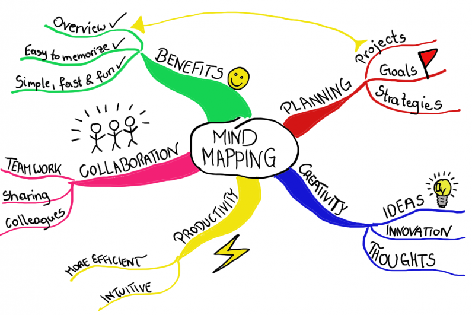

>
프로젝트 기획
기획안 작업
1.기획은 웹 콘텐츠의 설계도
1) 목표를 설정
2) 목표를 성취하기 위한 필수단계
2.기획자의 뚜렷한 주관과 독창성이 담긴 결과물
1) 아이디어는 번뜩이는 섬광
2) 평소에 꾸준히 관심을 기울여야 한다(기록)
기획안 내용 작성
1. 기획안 나쁜 예
- 자료만 복붙한 설득력과 성의 없는 내용
- 제작목적이 불분명함.
- 내용에 대한 전달력과 설득력이 부족
- 제작목적이 불분명함.
2. 기획안 좋은 예
- 제작해야 할 타당성을 갖춤(왜 써야하는 가?)
- 적합한 내용으로 일목요연한 구성 및 전달
아이디어 도출
아이디어 발상과정
- 아이디어는 자신이 가진 지식과 경험의 범위 내에서만 떠오른다.
- 아이디어를 생각해내는 방법에는 정답이 없다.
좌뇌형/우뇌형 인간의 특징
- 누구나 꾸준한 훈련을 통해 양쪽 뇌의 기능을 고르게 활용할 수 있다.
아이디어 발상
마인드 매핑
- 핵심 문제와 관련된 여러 요인들을 발견하고, 그 안에서 아이디어와 단서를 찾고자 한다

브레인 스토밍
- 문제,해결방안에 대해 최대한 많은 의견을 공유하고자 하는 회의,교육도구